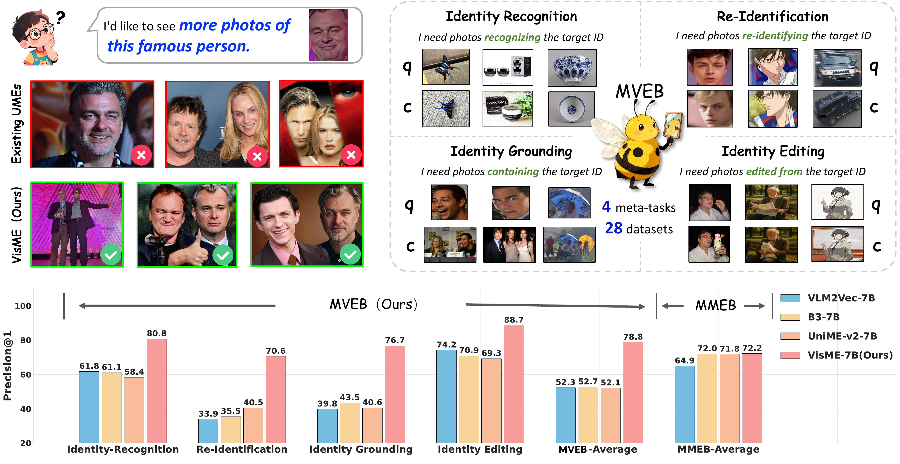
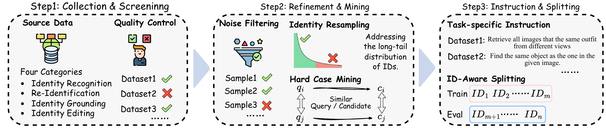
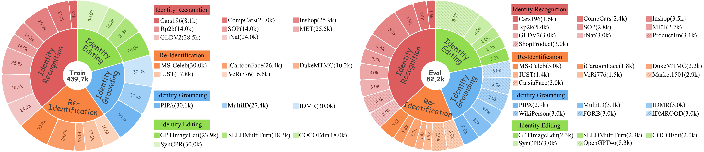
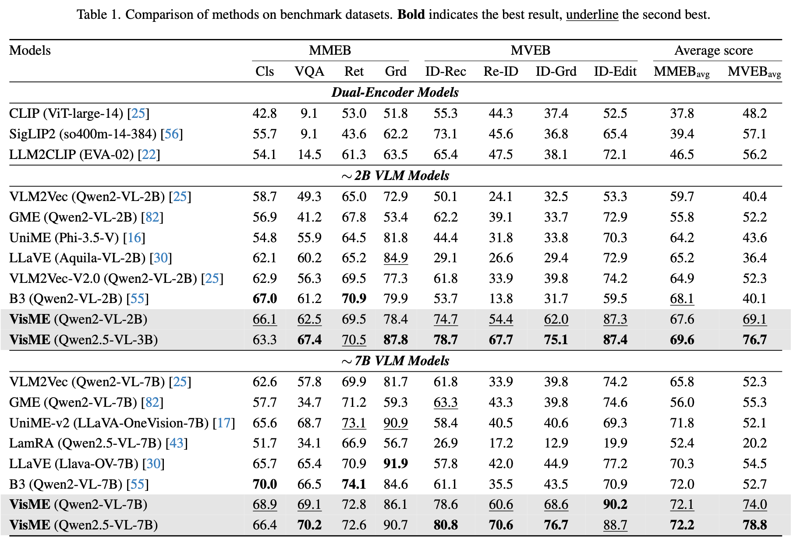
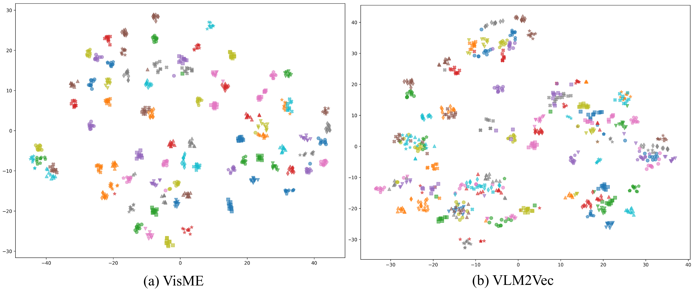

Universal Multimodal Embeddings (UMEs) aim to unify various modalities and tasks into a shared representation space. In recent years, this field has witnessed substantial progress driven by the development of Multimodal Large Language Models (MLLMs). However, a crucial capability, visual identity discrimination, remains underexplored in existing UME methods, despite its critical role in a wide range of tasks, including instance retrieval, re-identification, and identity preservation in AI-generated content. To bridge this gap, we propose a unified formulation for visual identity discrimination (VisID) and introduce MVEB (Multimodal Visual Identity Embedding Benchmark), a large-scale benchmark curated from both real-world and synthetic datasets to support evaluation and training. Furthermore, we present a simple yet effective learning framework that jointly optimizes general multimodal and visual identity representations through a carefully designed identity-aware sampling mechanism. Extensive experiments demonstrate that our approach successfully endows UMEs with strong identity discrimination capability and maintains competitive general multimodal performance. We believe this work not only illuminates a critical yet neglected capability, but also takes a step toward more holistic universal multimodal embeddings.
We revisit Visual Identity Discrimination (VisID) from the perspective of Universal Multimodal Embeddings (UMEs). Current state-of-the-art UMEs often fail to distinguish desired visual identities, as existing benchmarks like MMEB include only a single image-to-image identity-matching subset. We formally define VisID and decompose it into four practical meta-tasks, introducing MVEB to comprehensively evaluate and enhance this critical capability.

We propose VisME, a joint training framework that unifies visual identity discrimination learning with standard contrastive objectives. Our method employs an identity-aware sampling strategy and a tailored contrastive loss to enforce intra-identity consistency, enabling seamless integration of identity-level and semantic-level representations.
Determine whether two images belong to the same identity, covering product recognition, landmark recognition, artifact matching, and fine-grained species recognition.
Match the same individual entity (person, face, or vehicle) across distinct visual observations or depictions under substantial appearance changes.
Use a reference image depicting a known identity as the query to retrieve images containing the same entity, linking partial observations to complete identities.
Assess robustness of identity representation against generative transformations, where text-prompted edits alter attributes while preserving subject identity.


Our training corpus combines MMEB and MVEB, totaling 40 datasets with 1.1M pairs. We use LoRA (rank=16, alpha=32) and GradCache for memory-efficient training. The key innovation is our identity-aware sampling strategy, which ensures samples sharing identical IDs are not treated as negative pairs, preventing severe performance degradation on identity-centric tasks.
VisME establishes state-of-the-art results on both MMEB and MVEB benchmarks. Our 7B model achieves an average score of 72.2 on MMEB and 78.8 on MVEB, significantly outperforming all baselines. Notably, our 2B model alone scores 69.1 on MVEB, surpassing all existing UMEs including 7B models.

VisME demonstrates superior identity-level capabilities across all four meta-tasks compared to VLM2Vec-7B. It accurately identifies fine-grained species by capturing subtle visual details, exhibits broad cross-domain versatility, and introduces identity grounding capability absent in prior UMEs.

The t-SNE visualization reveals that VisME produces well-clustered embeddings where same-identity samples are tightly grouped, while VLM2Vec scatters them across the space, confirming our model's stronger identity discrimination capability.

@inproceedings{cao2026illuminating,
title={Illuminating Visual Identity in Universal Multimodal Embeddings},
author={Cao, Jiawei and Feng, Junyi and Hua, Jiashen and Huang, Ziheng and Deng, Bing and Wu, Kaijie and Gu, Chaochen and Ye, Jieping},
booktitle={Proceedings of the IEEE/CVF Conference on Computer Vision and Pattern Recognition},
year={2026}
}
 Dataset
Dataset